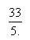
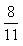
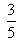
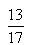

1. সূর্য থেকে পৃথিবীতে আলো আসতে কতক্ষন সময় লাগে?
৮.৩২ মিনিট
৯.১২ মিনিট
৭.৯৬ মিনিট
১০.৫৬ মিনিট
2. কোনটি স্তন্যপায়ী প্রানী নয়?
হাতি
কুমির
তিমি
বাদুর
3. এই শতাব্দীর সবচেয়ে উজ্জল ধূমকেতু কোনটি?
হেইলির ধুমকেতু
হেল-বপ-ধূমকেতু
শূমেকার লেভী ধূমকেতু
কোনটি নয়
4. বিদ্যুৎকে সাধারন মানুষের কাজে লাগানোর জন্য কোন বৈজ্ঞানিকের অবদান সবচেয়ে বেশি?
বেজ্ঞামিন ফ্রাঙ্কলিন
আইজ্যাক নিউটন
টমাস এডিসন
ভোল্টা
5. ভূ-পৃষ্ঠের সৌরদীপ্ত ও অন্ধকারচ্ছন্ন অংশের সংযোগ স্থলকে কি বলে?
ছায়াবৃত্ত
গুরুবৃত্ত
উষা
গোধূলী
6. সমুদ্র পৃষ্ঠে বায়ুর স্বাভাবিক চাপ কত?
৭.৬ সেঃ মিঃ
৭৬ সেঃ মিঃ
৭২ সেঃ মিঃ
৭৭ সেঃ মিঃ
7. ভূ-মধ্যসাগর ও আটল্যান্টিক মহাসাগরের মধ্যে কোন প্রনালীর অবস্থান?
হরমুজ
জিব্রাল্টার
বসফরাস
দার্দানেলিস
8. আকাশে উজ্জলতম নক্ষত্র কোনটি?
ধ্রুবতারা
প্রক্সিমা সেন্টারাই
লুব্ধক
পুলহ
9. জোয়ার ভাটার তেজকটাল কখন হয়?
অমাবস্যায়
একাদশীতে
অষ্টমীতে
পঞ্চমীতে
10. একটি সংখ্যার তিনগুনের সাথে দুইগুন যোগ করলে ৯০ হয় সংখ্যাটি কত?
১৬
১৮
২০
২৪
11. পরপর ১০ টি সংখ্যার প্রথম ৫টি সংখ্যার যোগফল ৫৬০ হলে শেষ ৫ টির যোগফল কত?
৫৮৫
৫৮০
৫৭৫
৫৭০
12. কোন ভগ্নাংশটি 2/3 থেকে বড়?




13. ১২ ও ৯৬ এর মধ্যে কয়টি সংখ্যা ৪ দ্বারা বিভাজ্য?
২১
২৩
২৪
২২
14. ৬,৮,১০ এর গানিতিক গড়, ৭,৯ এবং কোন সংখ্যার গানিতিক গড় সমান?
৫
৮
৬
১০
15. যদি x+5y=16 এবং x=3y হয় y=?
-24
-2
8
2
16. বাংলা বর্নমালায় মাত্রাবিহীন বর্নের সংখ্যা কত?
এগারটি
নয়টি
দশটি
আটটি
17. ক’ ও খ’ দুইটি সংখ্যা। ক এর 1/2 এবং খ এর 1/3 যোগ করলে 45 হয়।খ 1/2 এর এবং ক এর 2/5 যোগ করলে হয় 50। ক ও খ এর মান কত?
ক=৫০ খ=৬০
ক=৬০ খ=৫০
ক=৪০ খ=৪৮
ক=৬০ খ=৪৮
18. তার বয়স বেড়েছে কিন্তু বুদ্ধি বাড়েনি’-এটা কোন ধরনের বাক্য?
যৌগিক বাক্য
সাধারন বাক্য
মিশ্র বাক্য
সরল বাক্য
19. একাদশে বৃহস্পতি’-এর অর্থ কি?
আশার কথা
সৌভগ্যের বিষয়
আনন্দের বিষয়
মজার বিষয়
20. লিঙ্গান্তর হয় না এমন শব্দ কোনটি?
সাহেব
বেহাই
সঙ্গী
কবিরাজ
21. সাধু ভাষা সাধারনত কোথায় অনুপযোগী?
কবিতার পঙ্কিতে
গানের কলিতে
নাটকের সংলাপে
গল্পের বর্ণনায়
22. দুটি পুরুষ বাচক শব্দ রয়েছে কোনটিতে?
ননদ
প্রিয়
শিষ্য
আয়া
23. বিভক্তিহীন নাম শব্দকে কি বলে?
নাম পদ
উপপদ
প্রতিপাদিক
উপমিত
24. কোন বাক্যটি দ্বারা অনুরোধ বুঝায়?
তুই বাড়ি যা
কাল একবার এসো
ক্ষমা করা ঘোর অপরাধ’
দূর হও
25. ধাতুর পর কোন প্রত্যয় যুক্ত করে ভাববাচক বিশেষ্য বুঝায়?
আন
আই
আও
আলবেনীয়দের ঔদ্ধতা
26. বচন অর্থ কি?
সংখ্যার ধারনা
গননান ধারনা
ক্রমের ধারনা
পরিমাপের ধারনা
27. মরি মরি!কি সুন্দর প্রভাতের রূপ’-বাক্যে মরি মরি কোন শ্রেনীর অব্যয়?
সমন্বয়ী
অনুন্বয়ী
পদান্বয়ী
অনুকার
28. দোলনা শব্দের সঠিক প্রকৃতি-প্রত্যয় কোনটি?
দুল+না
দো্ল+না
দোল+অনা
দোলনা+আ
29. কৌশলে কার্যোদ্ধার’-কোনটির অর্থ?
গাছে তুলে মই কাড়া
এক খুড়ে মাথা মোড়ানো
ধরি মাছ না ছুই পানি
আকাশের চাদ হাতে পাওয়া
30. সন্ধি ব্যকরনের কোন অংশের আলচ্য বিষয়?
রুপতত্ত্ব
ধনিতত্ত্ব
পদক্রম
বাক্যতত্ত্ব
31. কোনটি অপ্রানীবাচক শব্দের বহুবচনে ব্যবহৃত হয়?
বৃন্দ
কুল
বর্গ
গ্রাম
32. বাঙ্গালীর ইতিহাস বইটির লেখক কে?
নীহাররঞ্জন রায়
আর সি মজুমদার
অধ্যাপক আব্দুল করিম
অধ্যাপক সুনীতি সেন
33. তৈরি পোশাক থেকে বাংলাদেশের রপ্তানী আয়ের শতকরা কত ভাগ আসে?
প্রায় ৫০ ভাগ
প্রায় ৫৪ ভাগ
প্রায় ৫৬ ভাগ
প্রায় ৬০ ভাগ
34. জাতিসংঘের সিডিও (Convention of the Elemination of all forms of Discrimination Against Women)এর Monitoring কমিটির চেয়ারপারসন বাঙালী মহিলা।তিনি কে?
সালমা সোবহান
সালমা খান
নাজমা চৌধুরী
হামিদা হোসেন
35. খুলনা হার্ডবোর্ড মিলে কাচামাল হিসেবে ব্যবহৃত হয় কোন ধরনের কাঠ?
চাপলিস
কেওড়া
গেওয়া
সুন্দরী
36. দিনাজপুর জেলার বড়পুকুরিয়ায় কিসের খনির প্রকল্পের কাজ চলছে?
কঠিন শিলা
কয়লা
চুনা পাথর
সাদামাটি
37. বাংলাদেশের বিদ্যুৎ শক্তির উৎস?
খনিজ তৈল
প্রাকৃতিক গ্যাস
পাহাড়ী নদী
উপরের সবগুলোই
38. ধলেশ্বরী নদীর শাখা নদী কোনটি?
শীতলক্ষা
বুড়িগঙ্গা
ধরলা
বংশী
39. Existentialism’ কি?
একটি দার্র্শনিক মতবাদ
প্রানিবিদ্যার একটি তত্ত্ব
ভূ-বিদ্যার একটি তত্ত্ব
পদার্থ বিদ্যার একটি তত্ত্ব
40. Adult cell’ ক্লোন করে প্রথম যে ভেড়ার জন্ম হয়েছে তার নাম দেওয়া হয়েছে-
শেলী
ডলি
মলি
নলি
41. Adult cell’ ক্লোন করে কোন দেশে একটি ভেড়ার জন্ম হয়েছে?
যুক্তরাজ্য
যুক্তরাষ্ট্র
অস্ট্রেলিয়া
ফ্রান্স
42. শাহনামা এর লেখক কে?
কবি ফেরদৌসী
মাওলানা রুমি
কবি নিজামী
কবি জামি
43. মেসোপটোমিয়া এলাকার বেশিরভাগ বর্তমানে কোন দেশে?
ইরাক
ইরান
তুরস্ক
সিরিয়া
44. টলেমি কি ছিলেন?
চিকিৎসক
দার্শনিক
জ্যোতির্বিদ
সেনাপতি
45. নোবেল পুরস্কারের জনক আলফ্রেড নোবেল ধনী হয়েছিলেন-
তেলের খনির মালিক হিসেবে
উন্নত ধরনের বিস্ফোরক আবিস্কার করে
জাহাজের ব্যবসা করে
ইস্পাত কারখানার মালিক হয়ে
46. স্টিভেন হকিং একজন খুবেই বিখ্যাত –
দার্শনিক
পদার্থবিদ
রসায়ণবিদ
কবি জামি
47. একজন রাজনীতিবিদ কিন্তু সাহিত্যে নোবেল পুরস্কার পেয়েছে_
চার্চিল
কিসিঞ্জার
দ্য গল
রুজভেল্ট
48. ২০০০ সালে অলম্পিক কোন শহরে অনুষ্ঠিত হয়?
বেইজিং
সিডনি
টোকিও
মেলবোর্ন
49. সম্প্রতি কুয়ালালামপুরে অনুষ্ঠিত আই.সি.সি ট্রফিতে কয়টি দেশ অংশ গ্রহন করে?
২০
২৩
২২
২১
50. সবচেয়ে শক্ত বস্তু কোনটি?
হীরা
লোহা
পিতল
গ্রানাইট পাথর
51. জাতিসংঘের কোন মহাসচিব বিমান দূর্ঘটনায় নিহত হয়েছিল?
ট্রিগভে লাই
কুর্ট্ ওয়াল্ডহেইম
দ্যাগ হ্যামারশোল্ড
উ থান্ট
52. মোনালিসা চিত্রটির চিত্রকর কে?
মাইকেল এঞ্জেলো
লিওনার্দো দ্যা ভিনচি
ভ্যানগগ
পাবলো পিকাসো
53. কোন দেশে ‘তালেবান’ নামক রাজনৈতিক গ্রুপ ক্ষমতায় অধিষ্ঠিত?
সুদান
তিউনিসিয়া
ইয়েমেন
আফগানিস্তান
54. 55 to 57 Each sentence below has two blanks. Choose the set of words for each blank that best Jits the meaning of the sentences as a whole:
Although a few years ago the fundamental fact about the Milky Way seemed fairly well ......... now even its mass and radius have come into .......
determined ...... resolution
established ...... question
Ignored ...... danger
Diminished ..... disrepute
55. Because she had a reputation for.... we were surprised and pleased when she greeted us so .....
Insolence ..... irately
insouciance.... cordially
arrogance.... disdainfully
querulousness ….. affably
56. A ......... statement is an ......... comparison; it does not compare things explicitly, but suggest a likeness between them.
sarcastic... unfair
metaphorical ........... implied
sanguine ..... inherent
blatant. . .overt
57. Questions 58 to 63 are incomplete sentences. Choose the word or phrase that best Jill the blank space to complete the sentence:
If ruby is heated it ........ temporarily loose its colour.
would
will
does
has
58. All of the people at theAAME conference are …….
Mathematic teachers
Mathematics teachers
Mathematics teacher
Mathematic's teachers
59. Prices for bicycles can run....Tk.Tk. 2000.00
as high as
so high as
as high to
as hish for
60. Travellers their reservations well in advance if they want to fly during the Eid holidays.
had better to get
had to get better
had better get
had better got